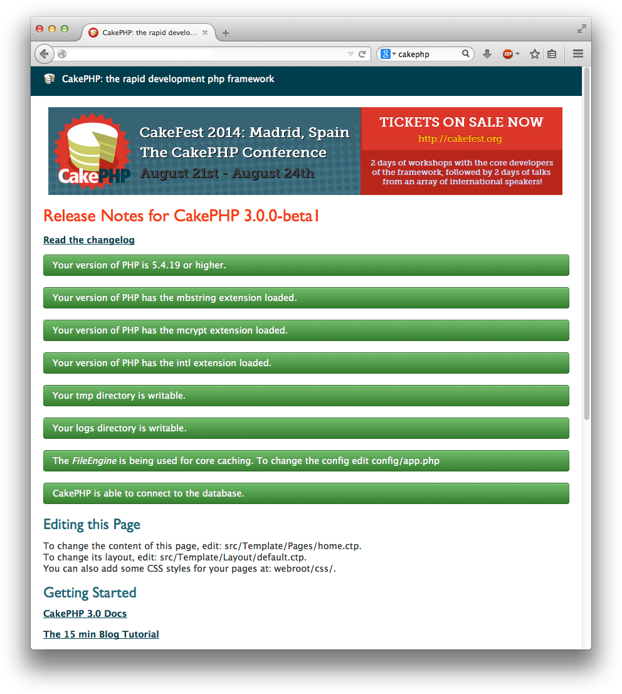

SLP: CakePHP: Getting Started
Go up to the main SLP documents page (md)
To get a CakePHP website up and running:
- Make sure your webserver is configured for CakePHP; you need to have
URL rewriting turned on. See the VirtualBox image details (md) page for how to do this
- This has already benn configured on both the VirtualBox image and the course server already
- You should have installed composer, either locally or globally (it’s installed globally on both the VirtualBox image and on the course server)
- You should have your MySQL datbase and login information ready, as you will need that shortly; you should have gotten that in the Collab Post’Em tool
- Install CakePHP, following the directions here
- On the course server, it MUST be in
~/html/cakephp/, or else we will not be able to find it (and we will not grade it); this means that the final URL will be http://server/~mst3k/cakephp/ (where “server” is the course server) - So we recommend putting it in
~/public_html/cakephp/on VirtualBox, and~/html/cakephp/on the course server. - To do this, run
composer create-project --prefer-dist cakephp/app cakephpfrom your~/public_htmldirectory (on VirtualBox) or~/htmldirectory (on the course server) - If your URLs are the same, then you can just do an rsync upload to transfer the files, and they should work on the course server as well; see the Frameworks homework (md) for details about rsync
- On the course server, it MUST be in
- Configure the CakePHP installation
- There are TWO .htaccess files (in the root
CakePHP directory (
~mst3k/html/cakephp/) and in the webroot directly below that (~mst3k/html/cakephp/webroot/)), and both will need to be edited and a line likeRewriteBase /~mst3k/cakephp/put in (edited for your particular directory/URL). Put this in as the second to last line, just above the</IfModule>line. - At this point, you should be able to view your URL, although it will indicate that it cannot connect to the database
- In config/app.php, edit app.php, and edit the Datasources => default array: you will need to change the values for username, password, and database to match your MySQL credentials (both username and database are your userid for this homework; your password is from above)
- There are TWO .htaccess files (in the root
CakePHP directory (
- At this point, you should be able to view the page
(
http://localhost/~mst3k/cakephp/, or similar). It will look much like the image below, although the particular colors and layout change with each minor version.- For CakePHP 3.3 (the version as of August 2016), it will have a large red area that says, “CakePHP / Build fast, grow solid. / Get the Ovens Ready”. Beneath that will be another large light blue area that has green checkboxes for EVERY line (make sure the ‘CakePHP is able to connect to the database’ one is green also!).
- Note that all the check marks are green! If ANY of them are yellow or red, then something is wrong, and it is not configured properly (the small yellow box that mentions debug mode is fine).
Troubleshooting
If you are getting “internal server error”, “Not Found”, or “404: File Not Found” messages when viewing your CakePHP site, there are two things to try:
- make sure your .htaccess file has the RewriteBase line added
- view the Apache error logs - see the Linux Administration Howtos (md) page for how to do this
That image
